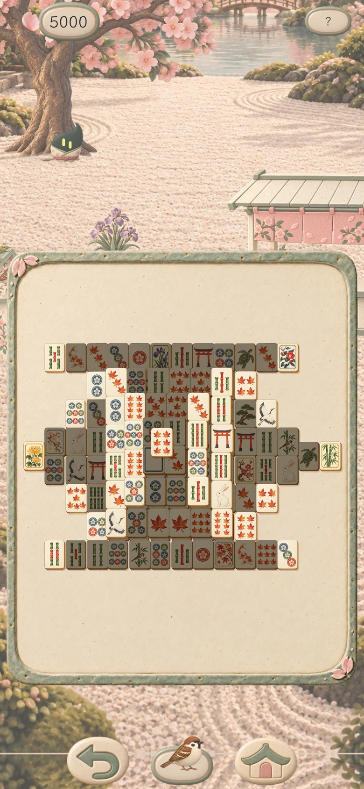

01 / 솔리테어
카드 한 장이 딱 맞는 기쁨.
클론다이크, 프리셀, 스파이더, 유콘… 익숙한 게임들이 새로운 정원을 찾았어요.
일본풍 정원에서 잠깐의 쉼
카드를 놓고 패를 맞추며 천천히 흐르는 시간을 느껴 보세요. 느긋하게 게임을 즐긴 뒤, Tomesi와 함께 나만의 평온한 공간을 꾸며 보세요.
광고 없이 · 나만의 속도로 · 오프라인 지원
작은 친구와 함께.
나만을 위한 정원.


나만의 공간이 될 네 곳
툇마루 옆에 화분 하나. 물가에는 등불을. 이끼 위에는 고양이를. 물건들이 하나씩 자리를 잡으면 정원도 천천히 살아나요.
비단잉어가 느긋하게 헤엄쳐요. 연못을 꾸미면 새로운 친구들이 찾아와요.
아침, 해 질 녘, 달빛. 쉬고 싶은 순간에 어울리는 빛을 골라 보세요.

그저 즐기는, 소박한 기쁨
익숙한 솔리테어부터 일본풍 작은 퍼즐까지, 오늘의 기분에 맞게 골라 보세요. 이길 때마다 정원에 꽃이 피어요.
클론다이크, 프리셀, 스파이더, 유콘… 익숙한 게임들이 새로운 정원을 찾았어요.

무늬를 살피고 패를 없애며 생각도 잠시 쉬게 해 주세요.

엔소, 쓰키미, 코이 미치… 기분 전환을 위한 작은 퍼즐들.
네 가지 게임은 언제나 무료. 클론다이크, 마작 솔리테어, 피라미드, 엔소.
컬렉션을 한 번 구매하면 열두 가지 게임을 더 즐길 수 있어요. 구독도, 광고도 없어요.
눌러서 인사해 보세요.
늘 알던 Tomesi와 새로운 쉼터로
익숙한 작은 초록빛 모습. 이곳에서 Tomesi는 기모노를 입고 곁에 앉아 정원 곳곳을 함께 다녀요. 물 위에서는 작은 배를 타고요.
모은 꽃잎으로 새 옷도 골라 주세요.
게임 캐릭터의 움직임을 직접 살펴보세요.
Tomesi의 세계 둘러보기편히 쉬기 전에
Tomesi Garden이 곧 iPhone과 iPad에 출시돼요. 출시되면 여기에 다운로드 링크를 추가할 예정이에요.
없어요. 게임 시작 전에도, 승리한 뒤에도요. 정원은 늘 조용한 공간이에요.
게임과 정원은 계정 없이 오프라인으로 즐길 수 있어요. 앱을 다운로드하거나 App Store에서 구매 또는 구매 복원을 할 때는 인터넷 연결이 필요해요.
게임을 하며 꽃잎을 모을 수 있어요. 정원 상점에서 꽃잎으로 장식, 친구들, 의상, 카드 디자인을 고를 수 있어요.
네. 땅, 물 위, 툇마루 등 알맞은 공간으로 물건을 옮길 수 있어요. ‘내 장식’에 놓을 수 있는 장소가 표시돼요. 집 앞에는 식물, 찻잔 세트, 작은 친구들도 놓을 수 있어요.
네, 게임에 움직임 줄이기 모드가 있어요. 이 사이트에서는 일시 정지 버튼으로 애니메이션을 멈출 수 있고, 기기의 설정도 반영해요.
자리를 비워 둘게요
곧 iPhone과 iPad에서 만나요.
궁금한 점이 있나요? 메일을 보내 주세요